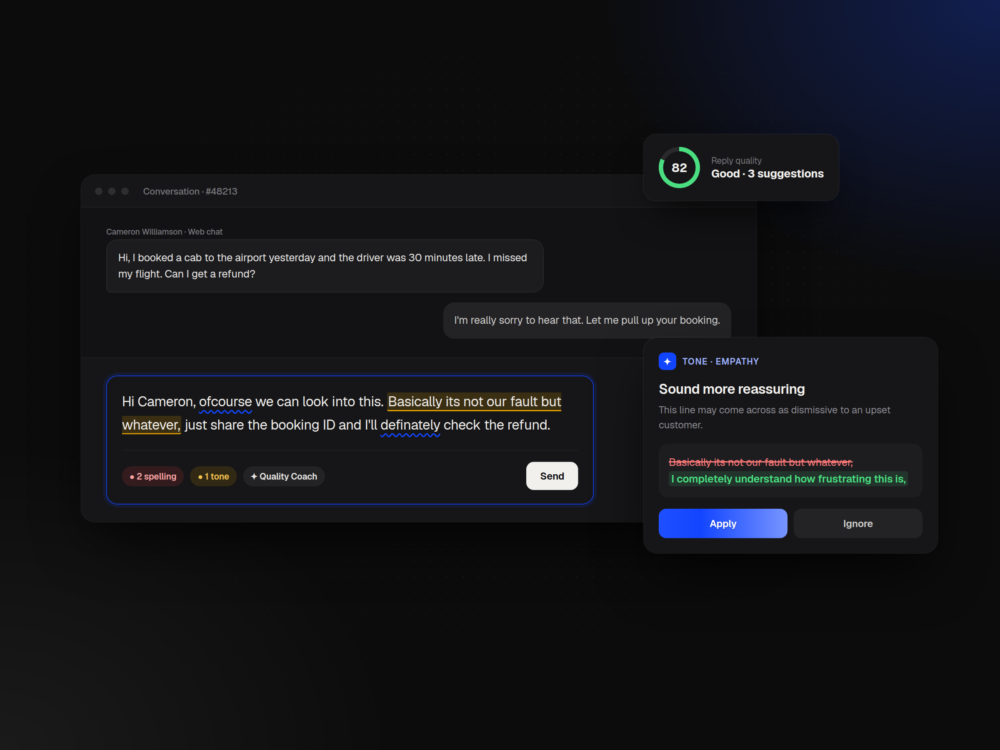

Quality Coach
An AI-powered real-time coaching system that helps support agents improve grammar, tone and clarity while they're replying to customers.

Inside the composer.
I designed the end-to-end experience for Quality Coach, an AI assistance layer built into the agent reply composer.
The goal was to help agents keep conversations high-quality in real time without disrupting their flow. Working with Product, AI, Engineering and CX, the challenge was to surface AI feedback in context while keeping suggestions actionable rather than overwhelming, so agents still felt in control.
Audited after the fact. Coached too late.
Traditional QA relied on audits after the conversation ended, so feedback arrived only once the interaction was already over.
- Agents repeated avoidable mistakes
- Quality feedback arrived too late
- QA teams spent excessive time auditing manually
- Service quality varied between agents
- Managers lacked real-time visibility
Three questions, one north star.
- Help agents improve conversation quality in real time without disrupting live interactions?
- Reduce dependency on post-conversation audits through proactive AI?
- Surface contextual AI feedback without overloading agents?
Why traditional QA kept missing the moment.
Reactive
Audits surfaced patterns but rarely helped in the moment mistakes happened.
Overload
Tone and grammar slipped across parallel chats. The cause was cognitive load, not a lack of knowledge.
Friction
Agents ignored intrusive suggestions. Concise, contextual feedback won.
Collaborative AI
Agents preferred assistive AI to autonomous AI. They wanted to own the reply.
Agents didn't want another reviewer.
“They wanted intelligent assistance that helped them respond better without interrupting their flow.”
That insight is why Quality Coach lives inside the reply composer rather than in a separate review interface.
An assistance layer, not an audit tool.
Quality Coach evaluates replies as they're written and surfaces suggestions across seven dimensions: tone, grammar, profanity, sentence length, relevancy, spelling and filler words. Agents can apply each one instantly or ignore it.
A coaching layer no one else built.
Intercom, Zendesk, Salesforce Service Cloud, Grammarly Business and Kore.ai either focused on post-conversation QA or offered generic writing help disconnected from support workflows. Almost none offered contextual coaching inside the reply itself.
Mapping coaching opportunities.
Inline grammar, real-time tone & profanity analysis, contextual relevancy engine
Filler-word nudges
Overall reply score, urgent-issue hints
Auto-rewriting full replies, mandatory AI approval gating
What went out the door.
Real-time coaching
Recommendations arrive before the message is sent.
Inline suggestions
Tone, grammar, profanity, length, relevancy and spelling, right in the composer.
One-tap corrections
Apply or dismiss. The agent always owns the reply.
QA visibility
Managers see how coaching is working while shifts are live.
Measuring impact.
Quality Coach laid the foundation for Freshdesk Omni's broader AI copilot vision.
See the complete case study
Every screen, flow and artifact lives in the Figma presentation.
Open the full deck in Figma ↗